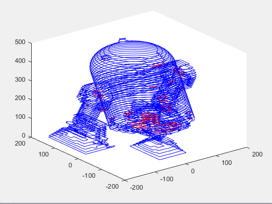

Jamie Brynes
engineer + developer
engineer + developer
This project is my fourth-year design project at the University of Oxford. The goal of the project is to utilize accelerometers from smartphones and new wearable devices in order to provide tools and support to the medical community. The project takes a two pronged approach that should converge toward the end. The first of these prongs is to develop a step counting algorithm utilizing purely the accelerometry from a generic smartphone device. The second of these prongs is to develop a sleep length and fragmentation algorithm that will be ran on an Apple Watch device. Ultimately, these two algorithms should come together to enable a study on the link between day-to-day activity with the step counter and quality and length of sleep as it relates to poor fitness in general, which could be extended to diagnostic support for people with diseases like heart failure or chronic obstructive pumonary disease.
The algorithms that will operate on the signal data must be: robust enough to deal with different possible sets of signals, efficient enough to run on a mobile device without significant power consumption or runtime, and powerful enough to give accurate activity markers.
Currently, an Android app has been written to collect a set of sensor data from the smartphone and deposit this data on a web server via HTTP POST.
This space will be updated as further progress is made.
Java, PHP
This project is my third-year group design project at the University of Oxford. The design brief was open ended: design a optical nanofabrication facility that can fabricate a variety of objects with a sub-micron resolution. The techniques that we used, or how we defined "a variety of objects" was left to us to decide based on a potential consumer's needs. With this in mind, we designed a facility that could fabricate down to a 55nm resolution with maximum object sizes reaching 8cm x 8cm x 8cm. The facility could operate on a variety of materials including polymers, metals, glass, and ceramics.
We selected the following optical fabrication techniques: Laser Micro-Machining, Stereolithography, Two-Photon Polyermisation, and STED Lithography. We also included the following imaging techniques so the consumer can view their nano-scale object: Confocal Microscopy, Two-Photon Microscopy, and STED Imaging as well as including the capability for rudimentary manipulation of the fabricated objects with Optical Tweezing.
My role in the project was initially to research the Stereolithography technique and determine the pros/cons of this technique. The bulk of my work was developing the accompanying software suite which was to interpret the user's demands and translate these into control signals for input to the control system. To this end, I developed a way of translating a 3-D model file (.stl) into reference paths for the control system. The software has portions written in both C++ and Matlab.
The initial endeavour was started in C++, and this portion of the program was tasked with taking the 3-D model file, parsing the binary data into data structures (sets of triangles, .stl files are tesselated) and then slicing the model into a finite number of layers (defined as an argument). The program would then write the data to a temporary directory of files. An example of a sliced model can be seen below, in this case a R2-D2 model
To speed up the development time, the next portion of the program was written in Matlab. This part of the program was tasked with taking the layer data and generating the tool paths as well as displaying a GUI to the user. The rationale for using Matlab was to take advantage of Matlab's extensive 2-D manipulation libraries as well as the GUI toolkit and plotting functionality. A display of the GUI can be seen below
The full project report with far greater detail can be found here: 3YP Project Report. The relevant software section begins on page 330.
C++, Matlab
{kind=link}
{kind=link}